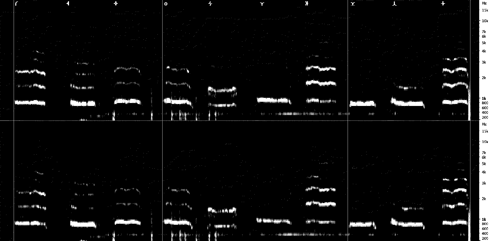

leanelei - Wikipelleta
レアネレイ語
レアネレイ語は人工言語の一つです。
この言語の特徴は、話者が人間ではなく鳥に類する生命体であることと、それに付随した文化から文法や語彙が発達することにあります。
人間が発話する場合、バードホイッスル等を使います。
本言語は、架空惑星、空想地図、架空文化等の複合データベース型創作『Wikpelleta』内の一つのプロジェクトです。

発声のスペクトル。
文字
まず、文字表記には、「架空文字表記」の他に「ローマ字転写表記」「日本語転写表記」の３つがあります。Wikpelleta創作の設定では、本言語は異世界の文化とともに”発見”された歴史があり、その転写方法として２つの転写方法がうまれました。
基本的に辞典などではローマ字転写表記を行いますが、フォントで架空文字を使いたい場合や、創作で言語発見初期の描写を行う際には日本語転写表記を行います。
本言語の文字はひらがなと同じく音節文字です。
| - | h | s | d | p | z | l | n | p | k | g | 他 | |
| a | あ | は | さ | だ | ぱ | ざ | ぁ | な | ば | か | が | ｍ |
| e | え | へ | せ | で | ぺ | ぜ | ぇ | ね | べ | け | げ | ｔ |
| i | い | ひ | し | ぢ | ぴ | じ | ぃ | に | び | き | ぎ | ｈ |
| o | お | ほ | そ | ど | ぽ | ぞ | ぉ | の | ぼ | こ | ご | ｖ |